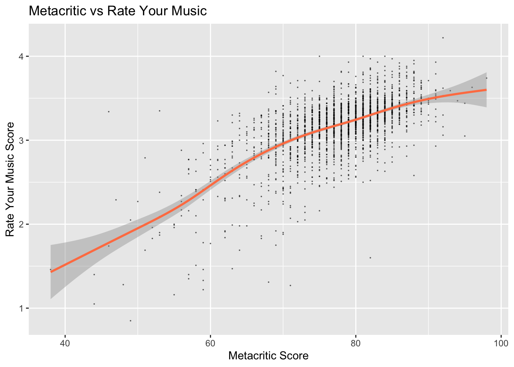
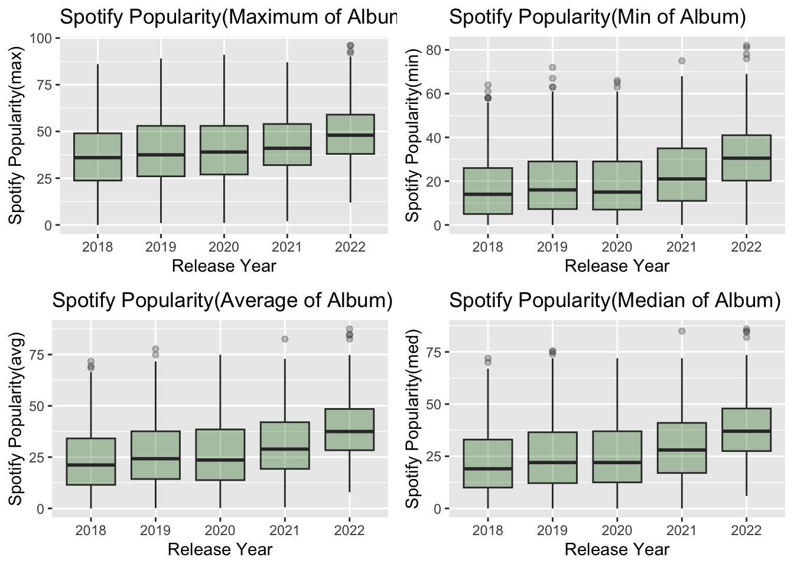
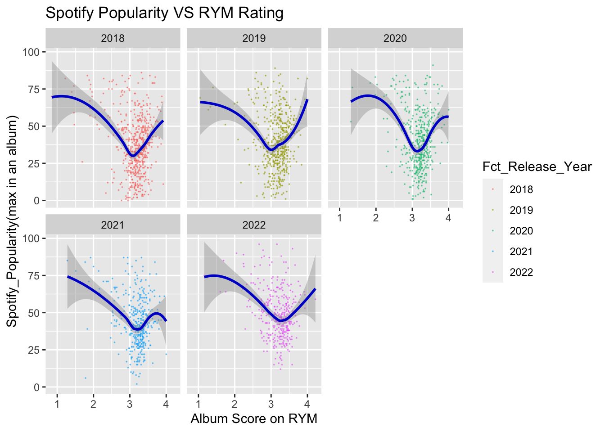

Chapter 4 Results
In the part of data exploratory analysis, we will first introduce the respective data of Metacritic Ratings and Rate Your Music Ratings in turn, then compare and analyze ratings from Metacritic and RYM. Next we will introduce Spotify Popularity and Tracks Variables, and finally we will cross-analyze data from these three data source.
Note: For reading convenience, the following plots whose feature are filled in purple denotes that the main data is from Metacritic, blue for RYM and green for Spotify. Orange represents cross-analysis. :)
4.1 Metacritic
What’s the distribution of critic ratings of Albums that were released between 2018 and 2022 on Metacritic look like? How does it change over time? The following graph tells us the answer.
First, from the marginal density graph in the right part of the graph, we can tell that the distribution of critic ratings is a little bit left skewed. Most albums’ ratings are within the range [70,90]. There are, however, a few albums with really low ratings. For example, one album’s rating on Metacritic doesn’t even reach 40 out of 100. Also, there are some extraordinary albums that almost get a full score. Now we print the album with the highest score and the one with the lowest score.
## [1] "Fetch the Bolt Cutters by Fiona Apple with score 98"## [1] "DUMMY BOY by 6ix9ine with score 38"Second, the top density curve of the graph tells us how the number of ratings of albums on Metacritic changes over time. We can see that the number of ratings is steadily decrease over time. Since every album only has one score on Metacritic, it could be that the phenomenon that the number of albums released is decreased over time leads to the decline.
Lastly, the purple dot in the graph shows the album ratings on Metacritic and corresponding release time. At first glance, there is no obvious pattern or trend in it: points are roughly evenly distributed, and there is no sudden change along the release date. However, there is a small interesting finding: it seems that there exists invisible line that separate the points between different year. It is weird at first because we didn’t make any restriction on the date. However, after second thought, it is quite reasonable, artists also celebrate Christmas and New Year! So at the end of each year, there are basically no new albums released.
4.2 Rate Your Music
The three pattern also exist in the below plot for RYM ratings. However, the variance of user ratings are much larger than critic reviews. Why? The lowest rating in Metacritic is around 40 while in RYM, it is below 1. Considering that the critic ratings range from 0 to 100 and user ratings range from 0 to 5, 40 in 100 is a much tender rating compared to 1 in 5. We can also observe that the number of albums is decline over time and also there are invisible lines between years.

Again, we give the album with the highest score and the one with the lowest score on RYM. An interesting observation is that the album with lowest score on Metacritic and RYM are both rap music, and the highest are both indie music.
## [1] "Concorde by Black Country, New Road with score 4.22"## [1] "Total Xanarchy by Lil Xan with score 0.85"Next, we will analysis relationship between the number of users who rate the album and the album ratings through an interactive scatter plot. You can hover over the point and it will show you the name of the album you point at. You can also select a rectangle to see the partial data and dive deeper.
The point are colored according to the Metacritic score, the deeper of the color means the higher the score is. Along the y-axis, we can see that roughly the color of the points turns deeper, which means overall the RYM ratings and Metacritic Score have positive relationships. (We will discuss the relationship later)
Regarding the relationship between the number of users who rate the album and the album ratings, we have following findings:
- There is no albums with high votes and low ratings. It is reasonable because people have more incentive to rate an album if they think it is great, otherwise they will just omit it. Also, good albums attract more people to listen to and rate them. There is an exception on the album “Jesus Is King” by Kanye West with 27k votes and 2.38 rating. Maybe we should all listen to this album thouroughly to find out why :)
- For albums with more than a few votes, the average rating increases with the number of votes.
- No albums in the area where represents high votes and max ratings
- There are points who are lower than expected ratings and should be seen as outliers. (e.g. “Jesus Is King”)
- Albums with low votes have relatively full range over y-axis.
4.3 Metacritic VS RYM
In this part we will compare between metacritic ratings and RYM ratings.
The following ridgelines shows the distribution of Metacritic ratings and RYM ratings in each year. We have following findings:
- We can see that the Metacritic ratings is overall higher than the user ratings on RYM. Maybe it is because the score range is different or the users is tend to be more harsh.
- The Metacritic ratings is slightly increased over the year while there is no same trend in RYM score plot.
- The variances of the Metacritic ratings are roughly the same in each year, while the variance of RYM ratings various a lot.
- There are more low ratings outliers in RYM data sets than Metacritic.

We show the top 15 rated singers/artists in Metacritic and RYM in the following graph. Unfortunately, no singer is in both the top 15 of Metacritic ratings and the top 15 of RYM ratings. This shows how different the tastes of professional music critics are from those of the public.

Does a high Metscritic score indicate a high RYM rating? Roughly YES!
The following scatter plot with smooth line shows the relationship between RYM Score and Metacritic score. The line has a positive slope with relative smally confidence interval(grey area around the line).
However, the answer is not so sure in the case that one of the score is extreme low. We can see that in the high subregion, the points are very dense. But in the lower left corner of the graph, the distribution of points begins to scatter. This shows that if the Metacritic score is particularly low, we are no longer very confident in our answer. That is, a low score of Metacritic no longer indicates a low score of RYM. Vice versa.

The following graph have 5 facets each of which contains scatter plot with smooth line in different year. Overall the patterns are same with the above graph. However, there are subtle different in the lower left corner and higher right corner between different year. For example, we have more confidence with our answer to the question “Does a high Metscritic score indicate a high RYM rating?” in year 2019 and 2021 for extremely low rating cases(lower left corner).

4.4 Spotify
The below scatter plot with marginal density plot shows how Spotify popularity of album distributed and how it changed over time. Different to ratings, the distribution of popularity is a bit right skewed rather than left skewed, which tells us that most album have relatively low popularity. It is worth noting that the popularity here means the maximum popularity of songs in a album. We will discuss the commons and difference of the distribution between maximum popularity, minimum popularity, average popularity and median popularity later.

The graph below shows the distribution of the box plot of min, max, average and median popularity in different years. We can see that the growth trend and distribution changes are similar for these four graphs. We also find that the popularity increases with the year. This makes sense because the popularity provided by Spotify is the station’s song popularity at a certain date, and people usually play albums just released more frequently rather than those released years ago.

Next, we draw a parallel coordinate plot on different representative methods of an album(avg, max, min and median). The major trend is that all these four variables are positive related. We can conclude this by the nearly horizontal lines between them. However, there do exist exception, we can also find some lines, who has extreme low average popularity, high maximum popularity, low minimum popularity and high median popularity. This means that, there ia a small fraction of albums, in which the variance of popularity of different tracks/songs can be very large.
4.4.1 Spotify Track
The analysis so far has been at the album level; in this subsection, we will focus on the song level.
Have you ever wonder what are the factors that contribute to the popularity of a song? The common practice is to pick two variables that you think are correlated and graph or analyze them. However with Spotify’s dataset of over 15 variables, a two-by-two analysis would take a lot of time and effort and be extremely inefficient.
To explore this, we plotted a heat map of the correlations between the variables in the Spotify track dataset. Color blue represents positive correlations and red represents negative correlations. Finding the rows and columns correlated with popularity, we can find that popularity is very positively correlated with the danceability of the song and negatively correlated with the instrumentalness of the song. Is this really the case?
For further analysis, we plotted the scatter plot of popularity vs. instrumentalness and the scatter plot of popularity vs. danceability.
The plot on the left shows popularity vs. instrumentalness. We can see that the points are mostly concentrated at the ends of the x-axis, and there is a tendency for the popularity to decrease as the instrumentalness rises. In addition, we also find that almost all points with high popularity are concentrated in the region where the instrumentalness is particularly small (upper left corner).
4.5 Spotify VS Metacritic VS RYM
Do albums with high ratings also have high popularity?
To answer this question, we drew scatter plots of Spotify popularity and metacritic rating as well as scatter plots of Spotify popularity and Rate Your Music rating. We can see that the distribution of these two plots is about the same.
- Firstly, most of the points are concentrated in the medium rating position.
- Second, the ratings of albums with low Spotify popularity are usually at an average level, and then the range of ratings of albums with high Spotify popularity is very large. This means the popular albums can be lowly rated or highly rated; we cannot say that an popular album must be good or bad.
- In addition, the curve fitted by geom_smooth tells us that albums with extreme low or extreme high ratings are usually more popular. This sounds quite reasonable. Because, high quality albums with high ratings are popular with the masses, while albums with low ratings, which we usually call catchy songs, are also very popular on the web. After all, in this day and age, the attributes of society are entertaining.
The following two graphs show the relationship between Spotify popularity and metacritic rating as well as the relationship between Spotify popularity and Rate Your Music rating in different years. Although in general, the trends and distribution of these graphs are similar to the ones we just mentioned, in some years, there are some edge cases that lead to subtle changes in the situation. For example, in the second graph below, which shows Spotify popularity and Rate Your Music rating, in 2021, albums with higher ratings no longer enjoy higher popularity, which is a curious phenomenon. A closer look reveals that there is an outlier that causes the fitted curve to shift downward.


In order to better analyze the relationship between popularity and rating, and considering that these are all continuous variables, we plotted the Parallel coordinate plot and properly changed the order of the variables for better observation.
Overall, the relationship between the five variables looks like a capital M, which means that the majority of albums fall within a range where high ratings and low popularity are associated overall. This corresponds to the graph we just presented, where the center of the graph is in the lower right corner. Of course, there are some exceptions in the Parallel coordinate plot, such as the inverted M. These are albums with low ratings but very high popularity.

Below is the Parallel coordinate plot by year, and we can see that in addition to showing the overall trend, the exceptions, i.e., the inverted M shape, become more and more pronounced as the year increases.
We can see that in 2018, the number of inverted M shapes lines is small and they do not stand out, meaning that the minimum popularity is not high. However, in 2022, there are more albums that have this very low rating, yet are extremely popular, both in terms of minimum, maximum and median popularity.
Perhaps this is related to the gradual popularity of short videos and their viral spread of catchphrases. In any case, it seems to show that our time is being occupied by entertainment little by little.